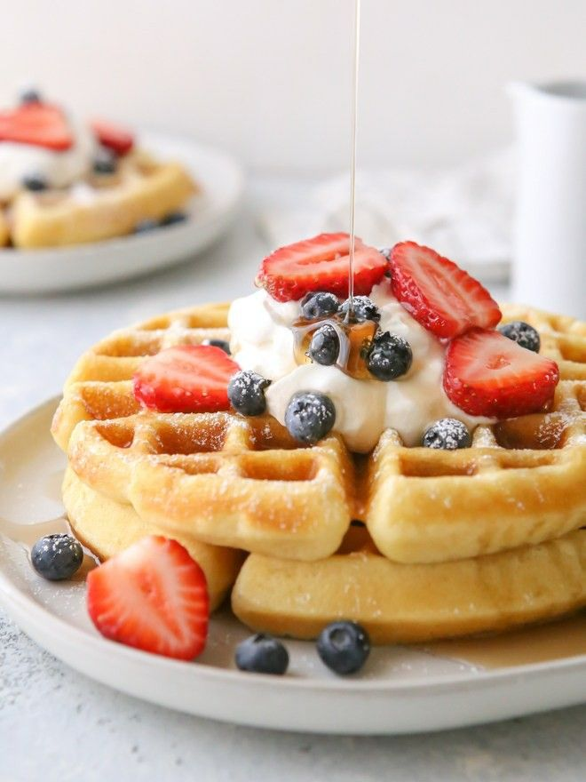
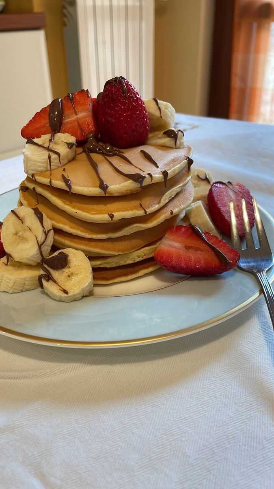

this page consists of breakfast items, which are waffles and pancakes. this is also the order they appear.
Waffles

Ingredients:
2 cups all-purpose flour
1 teaspoon salt
4 teaspoons baking powder
2 tablespoons white sugar
2 large eggs
1 ½ cups warm milk
⅓ cup butter, melted
1 teaspoon vanilla extract
Gather all ingredients.
Mix flour, salt, baking powder, and sugar together in a large bowl; set aside. Preheat waffle iron to desired temperature.
Beat eggs in a separate bowl; stir in milk, butter, and vanilla.
Pour milk mixture into flour mixture; beat until blended.
Ladle batter into a preheated waffle iron.
Cook waffles until golden and crisp. Serve immediately and enjoy! Toppings include Nutella, whipped cream, berries, chocolate chips or maple syrup. Or all at once, nobody's stopping you
Pancakes

Ingredients
1 ½ cups all-purpose flour
3 ½ teaspoons baking powder
1 tablespoon white sugar
¼ teaspoon salt, or more to taste
1 ¼ cups milk
3 tablespoons butter, melted
1 large egg
Sift flour, baking powder, sugar, and salt together in a large bowl. Make a well in the center and add milk, melted butter, and egg; mix until smooth.
Heat a lightly oiled griddle or pan over medium-high heat. Pour or scoop the batter onto the griddle, using approximately 1/4 cup for each pancake; cook until bubbles form and the edges are dry, about 2 to 3 minutes. Flip and cook until browned on the other side. Repeat with remaining batter. Serve hot.